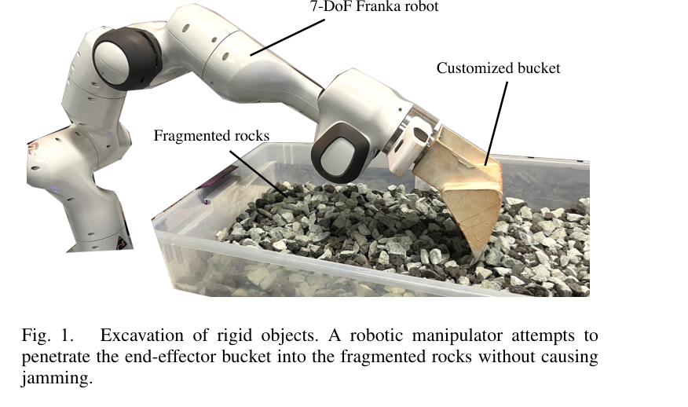
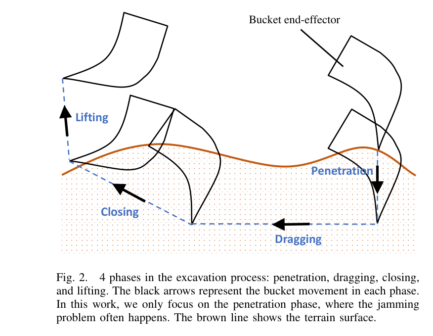
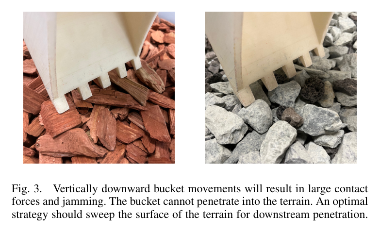
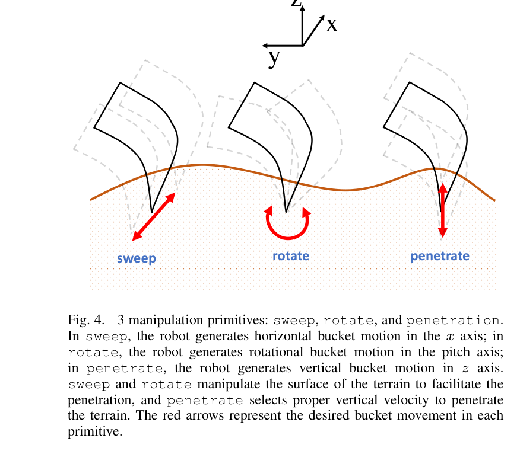
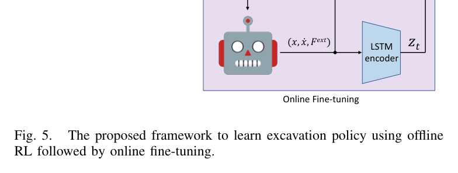
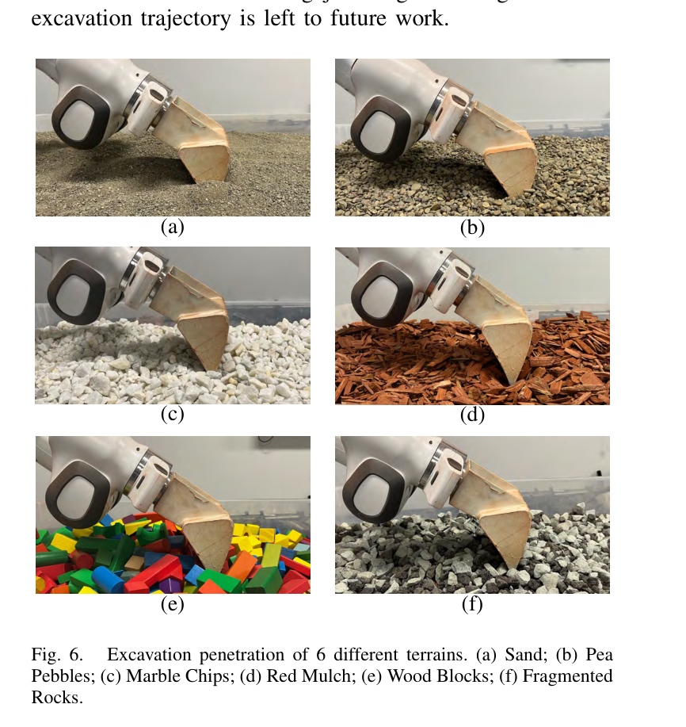
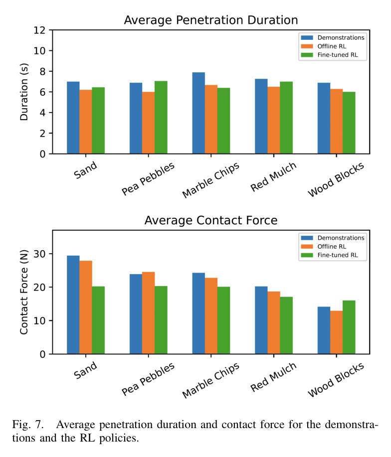
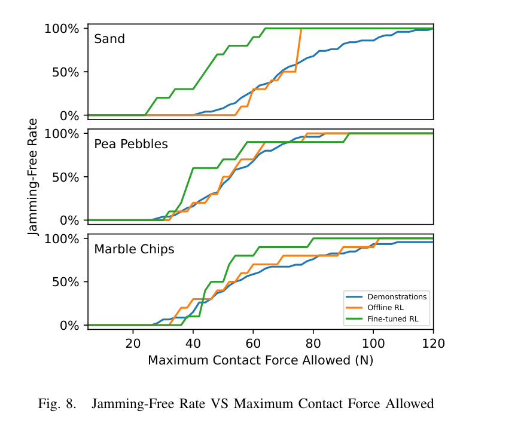

Learning Excavation of Rigid Objects with Offline Reinforcement Learning
Shiyu Jin, Zhixian Ye, Liangjun Zhang · arXiv:2303.16427
한줄 요약 — 강체 사이에 버킷이 걸리는 문제를 수평 쓸기, pitch 회전, 수직 관입 프리미티브로 분해하고 오프라인 RL이 sub-optimal 시연의 좋은 구간을 재조합한다. 일반 정책은 여섯 재료에 적용되고 소량 온라인 미세조정으로 개선되지만, 시각 없이 전체 굴착주기가 아닌 penetration만 다룬다.
1.연구 배경 및 동기
비정형 강체 접촉에서 걸림 없이 버킷을 관입하기
모래 같은 입상재와 달리 파쇄암·돌·목재 조각은 크고 비변형인 다점 접촉을 만들어, 잘못 관입하면 접촉력이 급증하고 버킷이 멈춘다. 해석적 접촉모델은 재료 형상과 배열이 바뀔 때 오차가 커지고 실제 로봇 온라인 강화학습도 손상 위험과 시간 비용이 크다.
논문은 penetration, dragging, closing, lifting 중 걸림이 집중되는 penetration만 분리한다. 숙련자 직관을 sweep, rotate, penetrate 세 프리미티브로 만들고, 원격조작·규칙정책의 정적 데이터에서 IQL이 sub-optimal 궤적의 좋은 구간을 이어 더 빠르고 낮은 힘의 관입을 찾도록 한다.

원문 Figure 1 · PDF p.1 — Fig. 1. Excavation of rigid objects. A robotic manipulator attempts to penetrate the end-effector bucket into the fragmented rocks without causing jamming.

원문 Figure 2 · PDF p.3 — Fig. 2. 4 phases in the excavation process: penetration, dragging, closing, and lifting. The black arrows represent the bucket movement in each phase. In this work, we only focus on the penetration phase, where the jamming problem often happens. The brown line shows the terrain surface.

원문 Figure 3 · PDF p.3 — Fig. 3. Vertically downward bucket movements will result in large contact forces and jamming. The bucket cannot penetrate into the terrain. An optimal strategy should sweep the surface of the terrain for downstream penetration.
고정 수직관입이나 소수 이산 primitive는 과도한 힘을 만들고 재료별 속도·한계를 세밀하게 조절하지 못한다.
온라인 RL은 접촉이 많은 실제 굴착에서 위험한 시행착오와 대량 로봇 상호작용을 요구한다.
행동복제는 수집 정책의 sub-optimal 행동을 그대로 모사해 시연보다 나은 궤적을 만들기 어렵다.
이 연구의 기여
불규칙 강체 굴착의 jamming을 주된 문제로 정식화하고 sand, pea pebbles, marble chips, red mulch, wood blocks, fragmented rocks까지 폭넓은 재료를 실물 평가했다.
수평 sweep, pitch rotate, 수직 penetrate를 연속 속도·힘/토크·변위 한계를 가진 세 프리미티브로 설계했다.
현재 관입 궤적과 시연 궤적을 두 LSTM encoder로 압축하고 IQL이 sub-optimal 시연에서 관입 정책을 학습하도록 했다.
재료별 정책, 모든 학습재료를 묶은 일반 정책, 미학습 파쇄암의 소량 온라인 미세조정을 실제 7축 로봇팔에서 비교했다.
2.방법론 및 시스템 구성
실험은 끝단에 맞춤형 버킷을 장착한 7-DoF Franka 로봇팔이 평평하게 정리된 강체 재료 트레이에 목표 깊이까지 관입하는 문제다. 상태는 초기 대비 버킷의 x·z 위치와 pitch, 해당 속도, 힘·모멘트로 구성되고, 힘이 큰 경우 Franka 안전제어기가 멈춘 것을 걸림으로 본다. teeth가 표면 아래 d_target에 도달하면 penetration을 종료하며 이후 dragging·closing·lifting은 사전 정의 궤적으로 실행할 수 있다고 가정한다.
정책은 관측 s=(x, ẋ, F_ext, z_t, z_demo)에서 여덟 개의 연속 프리미티브 파라미터를 출력한다. z_t는 현재 궤적의 진행과 순간 지형배열을, z_demo는 시연 궤적에서 재료 유형과 그 재료를 다루는 정보를 압축한다. IQL은 정적 데이터 분포 밖 행동의 Q값을 직접 질의하지 않는 expectile regression을 이용해 sub-optimal 시연을 재조합하며, 새 재료에서는 소량 규칙 시연으로 z_demo를 얻고 제한된 온라인 상호작용으로 추가 학습한다.
처리 파이프라인
1
안전한 오프라인 데이터 수집
다섯 학습재료마다 규칙정책 100개와 원격조작 20개 궤적을 수집한다. 각 궤적은 약 75개 전이를 포함한다.
2
세 연속 프리미티브 실행
sweep은 조각을 밀고 rotate는 표면을 느슨하게 하며 penetrate는 수직 진입한다. 힘·토크 한계에서 방향전환 또는 상승한다.
3
현재 궤적 LSTM 표현
q_phi1은 상대 자세·속도·외력의 현재 시계열을 인코딩해 관입 진행과 접촉배열을 표현한다.
4
시연 궤적 LSTM 표현
q_phi2는 시연 전체를 인코딩해 재료 유형과 필요한 장기 접촉 정보를 제공한다.
5
IQL 오프라인 정책학습
깊이오차와 접촉력을 벌점으로 두고 데이터 지지집합 안의 높은 Q 행동을 이어 빠르고 낮은 힘의 정책을 만든다.
6
일반 정책과 온라인 적응
다섯 데이터셋을 합쳐 일반 정책을 학습하고, 파쇄암은 규칙 시연 10개와 새 궤적 20개로 미세조정한다.
7
고주파 임피던스 실행
정책은 10 Hz로 primitive를 고르고 임피던스 제어기는 1,000 Hz로 버킷 속도를 추종한다.
원문 수식과 의미
오프라인 RL 데이터셋
\\mathcal{D}=\\{(s_t^i,a_t^i,s_{t+1}^i,r_t^i)\\}
환경과 추가 상호작용하지 않고 원격조작·규칙정책에서 미리 수집한 전이만으로 정책을 학습하는 문제 정의다.
목표 관입깊이에 빠르게 도달하면서 외력을 작게 유지하도록 하는 논문 식 (1)이다. 실험은 d_target=0.05m, w1=400, w2=0.0004를 사용한다.

원문 Figure 4 · PDF p.4 — Fig. 4. 3 manipulation primitives: sweep, rotate, and penetration. In sweep, the robot generates horizontal bucket motion in the x axis; in rotate, the robot generates rotational bucket motion in the pitch axis; in penetrate, the robot generates vertical bucket motion in z axis. sweep and rotate manipulate the surface of the terrain to facilitate the penetration, and penetrate selects proper vertical velocity to penetrate the terrain. The red arrows represent the desired bucket movement in each primitive.

원문 Figure 5 · PDF p.4 — Fig. 5. The proposed framework to learn excavation policy using offline RL followed by online fine-tuning.
3.핵심 기술
Sweep·rotate·penetrate 연속 프리미티브
버킷을 곧바로 누르지 않고 sweep으로 이빨 앞 조각을 밀고 rotate로 접촉구조를 느슨하게 한 뒤 penetrate한다. 연속 속도·힘·변위 한계 덕분에 고정 이산행동보다 재료 배열에 세밀하게 적응한다.
sweep: v_x, F_x^lim, d_x^lim
rotate: omega_pitch, M_pitch^lim, alpha_pitch^lim
penetrate: v_z, F_z^lim
힘·토크·변위 한계가 방향전환과 primitive 전환을 결정
이중 LSTM 기반 지형·진행 표현
현재 encoder는 자세·속도·외력 이력으로 진행도와 로컬 배열을, demonstration encoder는 재료 고유 접촉특성을 압축한다. 일반 정책에서 z_demo는 명시적 재료 라벨 없이 재료를 구별하는 역할을 한다.
각 시점 입력은 상대 자세 3차원·속도 3차원·외력 3차원
z_t는 현재 trajectory c_1:t에서 추정
z_demo는 demonstration trajectory 전체에서 추정
새 재료는 소수 규칙 시연으로 z_demo를 다시 계산
IQL의 sub-trajectory stitching
행동복제와 달리 IQL은 expectile regression으로 데이터 지지집합 안의 높은 가치 행동을 선택해 서로 다른 시연의 좋은 구간을 잇는다. 위험한 실차 탐색을 줄이면서 시연보다 나은 관입을 찾는 접근이다.
정적 데이터만으로 초기 정책학습
행동복제 대비 모든 5개 학습재료에서 높은 평균 reward
2-layer ReLU MLP, hidden 256
Adam 학습률 3×10^-4
일반 정책과 제한된 온라인 적응
다섯 데이터셋을 합친 일반 정책은 서로 다른 접촉특성을 다룬다. 미학습 파쇄암에서도 규칙 시연 10개로 z_demo를 얻고 온라인 궤적 20개만 추가해 적응한다.
학습재료 5종과 미학습 파쇄암 1종
일반 정책은 결합 데이터셋 D_all 사용
분포 이동을 줄이기 위해 새 z_demo는 학습정책이 아닌 규칙정책으로 수집
20개 온라인 궤적은 약 1,500회 상호작용
4.실험 결과
실험 환경·장비·데이터
맞춤형 버킷을 장착한 7-DoF Franka 로봇팔과 강체 재료 트레이를 사용했다. 굴착기 4자유도를 흉내 내기 위해 shoulder panning·lifting, elbow lifting, wrist lifting만 움직이고 나머지 3축은 고정했다.
학습재료는 sand, pea pebbles, marble chips, red mulch, wood blocks의 5종이고, fragmented rocks는 미학습 OOD 재료다.
관절토크와 Jacobian으로 버킷–지형 접촉력을 계산하며 실제 teeth 힘 대신 7번째 링크 끝점 힘으로 근사했다.
정책 10 Hz, 임피던스 제어 1,000 Hz로 실행하고 재료는 매 궤적 뒤 평평하게 수동 재설정했다.
실험 프로토콜
재료마다 규칙정책 100개와 원격조작 20개 궤적을 수집하고 각 궤적의 초기 접촉점을 표면 10cm×15cm 영역에서 균등 샘플링했다.
고정 수직하강, 행동복제, 재료별 offline RL, 재료별 fine-tuned RL, 결합 데이터 일반 정책과 일반 정책 미세조정을 비교했다.
재료별 정책은 각 조건에서 10회 실행해 trajectory reward의 평균과 표준편차를 기록했다.
새 파쇄암은 규칙정책 10개 궤적으로 z_demo를 만들고 20개 궤적을 온라인 수집해 일반 정책을 미세조정했다.
한 궤적 최대 접촉력을 임의 threshold로 다시 해석해 장비 힘 한계가 달라질 때 jamming-free rate가 어떻게 바뀌는지 분석했다.
비교 기준
Vertically Downward: 표면 재배열 없이 버킷을 수직으로 내리는 고정 궤적
Behavioral Cloning: 동일 오프라인 데이터와 LSTM encoder를 쓰는 2층 MLP 모방정책
Demonstrations: 원격조작·규칙정책 궤적의 평균 reward, 관입시간, 접촉력
Offline RL pi_j: 각 재료 데이터셋만으로 학습한 IQL 정책
Fine-tuned pi_j 및 general policy: 소량 온라인 데이터와 전체 재료 결합의 효과 비교
평가 지표
trajectory reward 평균±표준편차
평균 penetration duration
궤적 평균 contact force
최대 허용 접촉력별 jamming-free rate
새 재료 fine-tuning 전후 reward

원문 Figure 6 · PDF p.5 — Fig. 6. Excavation penetration of 6 different terrains. (a) Sand; (b) Pea Pebbles; (c) Marble Chips; (d) Red Mulch; (e) Wood Blocks; (f) Fragmented Rocks.
핵심 결과 해석
고정 수직하강은 본문에서 6개 재료 중 5개가 큰 접촉력으로 걸렸다고 설명하지만 표 II에는 여섯 재료 모두 Jamming으로 표기되어 내부 불일치가 있다. 반면 재료별 offline RL은 다섯 학습재료에서 행동복제보다 reward가 높았고 실험 중 jamming을 일으키지 않았다. 그림 7의 관입시간과 평균 접촉력도 대체로 시연보다 짧고 낮아, IQL이 sub-optimal 시연을 그대로 복제하지 않고 더 효율적인 궤적을 구성했음을 뒷받침한다.
재료별 온라인 미세조정은 sand, pea pebbles, marble chips에서는 reward를 더 높였지만 red mulch와 wood blocks에서는 offline 정책보다 낮아졌다. 저자들은 가벼운 wood blocks에서 접촉력 항의 영향이 작아져 속도와 힘 사이 trade-off가 달라진 것으로 해석한다. red mulch는 길고 얇은 한 조각이 bucket teeth에 끼어 큰 접촉력을 만든 outlier가 있었다.
다섯 재료를 합친 일반 정책은 여섯 재료 모두에 적용됐고, 미학습 파쇄암에서도 -40.17±11.17의 reward로 걸림 없이 동작했다고 보고한다. 20개 온라인 궤적 후 파쇄암 reward는 -37.05±10.81로 개선됐다. 최대 허용 접촉력이 낮아지는 더 약한 장비를 가정한 분석에서도 offline RL이 시연보다 높은 jamming-free rate를 유지했지만, 정확한 비율 수치는 도표로만 제시된다.
정량 결과
평가 항목
정량 결과
조건·맥락
원문 근거
학습재료별 데이터
규칙정책 100개+원격조작 20개 궤적
5개 학습재료 각각; 궤적당 약 75 transitions
PDF p.5
정책·제어 주파수
10 Hz / 1,000 Hz
프리미티브 선택 / 임피던스 추종
PDF p.5
목표 관입깊이
0.05m
보상과 성공 조건에 사용한 d_target
PDF p.6
온라인 미세조정
20 trajectories, 약 1,500 interactions
z_demo용 10개 시연 이후 추가 수집
PDF p.6
sand reward
BC -48.90±11.06, offline RL -39.23±9.30, fine-tuned -26.76±4.60
재료별 정책 10회 시험
PDF p.7
red mulch reward
BC -30.20±9.96, offline RL -26.84±6.54, fine-tuned -27.03±3.96
미세조정이 소폭 악화된 사례
PDF p.7
파쇄암 일반정책 reward
-40.17±11.17
미학습 OOD 재료
PDF p.7
파쇄암 미세조정 reward
-37.05±10.81
소량 온라인 적응 후
PDF p.7
실패 사례와 경계조건
고정 수직관입은 큰 접촉력과 걸림을 유발하며 본문 5/6과 표의 6/6 표기가 서로 일치하지 않는다.
red mulch 한 조각이 bucket teeth에 끼어 큰 접촉력을 만든 outlier가 발생했다.
wood blocks와 red mulch에서는 온라인 fine-tuning이 offline 정책 reward를 개선하지 못했다.
시각이 없어 큰 돌 사이의 빈틈을 관입 전에 직접 관측하지 못하고 접촉 이후 시계열에 의존한다.

원문 Figure 7 · PDF p.6 — Fig. 7. Average penetration duration and contact force for the demonstra- tions and the RL policies.

원문 Figure 8 · PDF p.7 — Fig. 8. Jamming-Free Rate VS Maximum Contact Force Allowed
5.한계 및 향후 연구
현재 한계
카메라나 깊이센서 없이 자세·속도·접촉력만 사용하므로 강체 사이의 틈과 위험 형상을 접촉 전에 식별할 수 없다.
실제 유압굴착기가 아니라 7축 Franka 로봇팔과 소형 재료 트레이에서만 검증했다.
전체 굴착주기 중 penetration만 학습하고 dragging, closing, lifting은 성공적으로 계획 가능하다고 가정한다.
접촉력은 bucket teeth에서 직접 측정하지 않고 7번째 링크 끝점 힘으로 근사한다.
재료별 실험 횟수가 10회이고 파쇄암도 단일 구성군이어서 현장 파쇄암의 규모·분포 일반화를 확정하기 어렵다.
향후 연구
RGB-D 또는 3D 지각으로 큰 강체 사이의 틈과 접근방향을 관입 전에 찾아 정책 관측에 결합한다.
penetration뿐 아니라 dragging·closing·lifting과 덤핑까지 대응 시연을 수집해 전체 굴착 정책으로 확장한다.
유압 압력·버킷 force sensor와 실제 굴착기 동역학을 사용해 대형 장비에서 안전한 힘 한계와 정책 주파수를 재설계한다.
다양한 크기·형상·혼합비의 파쇄암에서 장기 반복하고 장비별 허용힘에 따른 jamming-free 성공률을 정량화한다.
6.한마디로 정리
핵심 방법은?
Sweep·rotate·penetrate의 연속 힘·속도 한계를 LSTM 접촉표현과 IQL로 학습해 sub-optimal 시연 구간을 재조합한다.
핵심 결과는?
재료별 offline RL은 다섯 학습재료에서 행동복제를 능가했고, 일반 정책은 미학습 파쇄암에 적용되어 소량 미세조정 뒤 reward가 개선됐다.
한계는?
시각 없는 7축 로봇팔 penetration만 검증했으므로 실제 유압굴착기의 전체 작업주기와 현장 강체 규모에 대한 증거는 없다.